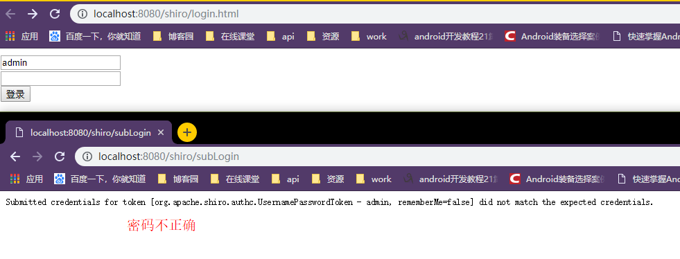
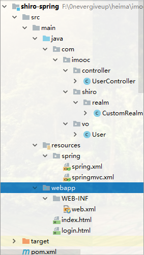

依赖：spring-context，spring-MVC，shiro-core，shiro-spring，shiro-web
实话实说：web.xml,spring,springmvc配置文件好难
大致效果

代码结构(使用web骨架构建)

pom.xml
<dependencies>
<dependency>
<groupId>junit</groupId>
<artifactId>junit</artifactId>
<version>4.11</version>
<scope>test</scope>
</dependency>
<dependency>
<groupId>org.springframework</groupId>
<artifactId>spring-context</artifactId>
<version>4.2.4.RELEASE</version>
</dependency>
<dependency>
<groupId>org.springframework</groupId>
<artifactId>spring-webmvc</artifactId>
<version>4.2.4.RELEASE</version>
</dependency>
<dependency>
<groupId>org.apache.shiro</groupId>
<artifactId>shiro-core</artifactId>
<version>1.4.0</version>
</dependency>
<dependency>
<groupId>org.apache.shiro</groupId>
<artifactId>shiro-spring</artifactId>
<version>1.4.0</version>
</dependency>
<dependency>
<groupId>org.apache.shiro</groupId>
<artifactId>shiro-web</artifactId>
<version>1.4.0</version>
</dependency>
</dependencies>实体类User
public class User {
private int id;
private String username;
private String password;
public User() {
}
public User(String username, String password) {
this.username = username;
this.password = password;
}
public User(int id, String username, String password) {
this.id = id;
this.username = username;
this.password = password;
}
@Override
public String toString() {
return "User{" +
"id=" + id +
", username='" + username + '\'' +
", password='" + password + '\'' +
'}';
}
public int getId() {
return id;
}
public void setId(int id) {
this.id = id;
}
public String getUsername() {
return username;
}
public void setUsername(String username) {
this.username = username;
}
public String getPassword() {
return password;
}
public void setPassword(String password) {
this.password = password;
}
}自定义Realm 域 类（加盐）
public class CustomRealm extends AuthorizingRealm {
@Override //授权
protected AuthorizationInfo doGetAuthorizationInfo(PrincipalCollection principals) {
String username = (String) principals.getPrimaryPrincipal();
//通过用户名username，获取角色
Set<String> roles=getRolesByUsername(username);
//通过用户名username，获取角色de权限
Set<String> permissions=getPermissionsByUsrname(username);
//返回AuthorizationInfo对象，先创建
SimpleAuthorizationInfo info=new SimpleAuthorizationInfo();
//设置授权 ---角色
info.setRoles(roles);
//设置授权 ---权限
info.setStringPermissions(permissions);
return info;
}
private Set<String> getPermissionsByUsrname(String username) {
//也是从数据库去，这里写死
Set<String> permissions=new HashSet<>();
permissions.add("user:select");
permissions.add("user:update");
permissions.add("user:delete");
permissions.add("user:insert");
return permissions;
}
private Set<String> getRolesByUsername(String username) {
//也是从数据库去，这里写死
Set<String> roles=new HashSet<>();
roles.add("admin");
roles.add("user");
return roles;
}
@Override //认证
protected AuthenticationInfo doGetAuthenticationInfo(AuthenticationToken token) throws AuthenticationException {
String username = (String) token.getPrincipal();
System.out.println("用户名："+username);
String pwd=getPwdByUsername(username);
System.out.println("密 码："+pwd);
if (pwd==null){
return null;
}
SimpleAuthenticationInfo info=new SimpleAuthenticationInfo(username,pwd,"customRealmSecret");
info.setCredentialsSalt(ByteSource.Util.bytes("salt"));
return info;
}
private String getPwdByUsername(String username) {
Map<String,String> map=new HashMap<>();
//加密的密码admin再加盐 --->c657540d5b315892f950ff30e1394480
map.put("admin","c657540d5b315892f950ff30e1394480");
super.setName("customRealmSecret");
return map.get(username);
}
}控制器controller
@Controller
public class UserController {
@ResponseBody
@RequestMapping(value = "/subLogin",method = RequestMethod.POST,produces="application/json;charset=utf-8")
public String subLogin(User user){
Subject subject = SecurityUtils.getSubject();
UsernamePasswordToken token = new UsernamePasswordToken(user.getUsername(),user.getPassword());
try {
subject.login(token);
} catch (AuthenticationException e) {
return e.getMessage();
}
return "登录成功";
}
}login.htnl
<!DOCTYPE html>
<html lang="en">
<head>
<meta charset="UTF-8">
<title>shiro登录页面</title>
</head>
<body>
<form action="subLogin" method="post">
<input type="text" name="username"/><br/>
<input type="password" name="password"/><br/>
<input type="submit" value="登录"/>
</form>
</body>
</html>重头戏：配置文件
web.xml
<web-app xmlns:xsi="http://www.w3.org/2001/XMLSchema-instance"
xmlns="http://java.sun.com/xml/ns/javaee"
xsi:schemaLocation="http://java.sun.com/xml/ns/javaee http://java.sun.com/xml/ns/javaee/web-app_3_0.xsd"
id="WebApp_ID" version="3.0">
<context-param>
<param-name>contextConfigLocation</param-name>
<param-value>classpath*:spring/spring.xml</param-value>
</context-param>
<listener>
<listener-class>org.springframework.web.context.ContextLoaderListener</listener-class>
</listener>
<listener>
<listener-class>org.springframework.web.context.request.RequestContextListener</listener-class>
</listener>
<filter>
<filter-name>shiroFilter</filter-name>
<filter-class>org.springframework.web.filter.DelegatingFilterProxy</filter-class>
</filter>
<filter-mapping>
<filter-name>shiroFilter</filter-name>
<url-pattern>/*</url-pattern>
</filter-mapping>
<!-- The front controller of this Spring Web application, responsible for handling all application requests -->
<servlet>
<servlet-name>springDispatcherServlet</servlet-name>
<servlet-class>org.springframework.web.servlet.DispatcherServlet</servlet-class>
<init-param>
<param-name>contextConfigLocation</param-name>
<param-value>classpath*:spring/springmvc.xml</param-value>
</init-param>
<load-on-startup>1</load-on-startup>
</servlet>
<!-- Map all requests to the DispatcherServlet for handling -->
<servlet-mapping>
<servlet-name>springDispatcherServlet</servlet-name>
<url-pattern>/</url-pattern>
</servlet-mapping>
</web-app>
spring.xml
<?xml version="1.0" encoding="UTF-8"?>
<beans xmlns="http://www.springframework.org/schema/beans"
xmlns:xsi="http://www.w3.org/2001/XMLSchema-instance"
xmlns:mvc="http://www.springframework.org/schema/mvc"
xsi:schemaLocation="http://www.springframework.org/schema/beans http://www.springframework.org/schema/beans/spring-beans.xsd
http://www.springframework.org/schema/mvc http://www.springframework.org/schema/mvc/spring-mvc.xsd">
<bean id="shiroFilter" class="org.apache.shiro.spring.web.ShiroFilterFactoryBean">
<property name="securityManager" ref="securityManager"/>
<property name="loginUrl" value="login.html"/>
<property name="unauthorizedUrl" value="403.html"/>
<!--过滤器页面-->
<property name="filterChainDefinitions">
<value>
/subLogin=anon <!--提交登录的url也不需要认证-->
/login.html=anon <!--不需要认证，也可以访问-->
/*=authc <!--需要认证，才可以访问-->
</value>
</property>
</bean>
<!--创建securityManager对象-->
<bean id="securityManager" class="org.apache.shiro.web.mgt.DefaultWebSecurityManager">
<property name="realm" ref="realm"/>
</bean>
<bean class="com.imooc.shiro.realm.CustomRealm" id="realm">
<property name="credentialsMatcher" ref="credentialsMatcher"/>
</bean>
<bean class="org.apache.shiro.authc.credential.HashedCredentialsMatcher"
id="credentialsMatcher">
<property name="hashAlgorithmName" value="md5"/>
<property name="hashIterations" value="1"/>
</bean>
</beans>springmvc.xml
<?xml version="1.0" encoding="UTF-8"?>
<beans xmlns="http://www.springframework.org/schema/beans"
xmlns:xsi="http://www.w3.org/2001/XMLSchema-instance"
xmlns:context="http://www.springframework.org/schema/context"
xmlns:mvc="http://www.springframework.org/schema/mvc"
xsi:schemaLocation="
http://www.springframework.org/schema/beans http://www.springframework.org/schema/beans/spring-beans.xsd
http://www.springframework.org/schema/context http://www.springframework.org/schema/context/spring-context.xsd
http://www.springframework.org/schema/mvc http://www.springframework.org/schema/mvc/spring-mvc.xsd">
<context:component-scan base-package="com.imooc.controller"/>
<mvc:annotation-driven/>
<!--排除静态文件-->
<mvc:resources mapping="/*" location="/"/>
</beans>个人总结下啦：
难在配置，特别有个坑在spring的bean里面，要的是web的
<bean id="securityManager" class="org.apache.shiro.web.mgt.DefaultWebSecurityManager"> 而我配少了个web
<bean id="securityManager" class="org.apache.shiro.mgt.DefaultWebSecurityManager">
哎，这就搞了我一晚头大，买了个表，顶
还有就是，理解好，shiro的shiroFilter，DefaultWebSecurityManager，CustomRealm（自定义的域），HashedCredentialsMatcher（加密），
也就七七八八了